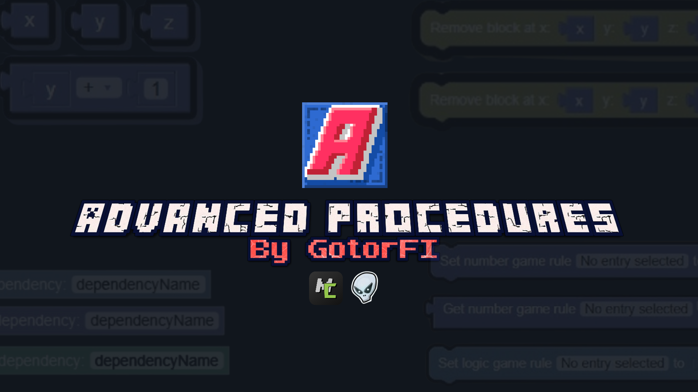

Hi, I'm GotorFI
Welcome to my official Advanced Procedures plugin's website. Here I will add all updates with details, list all the procedures blocks and here you can download the plugin.


Welcome to my official Advanced Procedures plugin's website. Here I will add all updates with details, list all the procedures blocks and here you can download the plugin.
Want to give feedback, report a bug, suggest a new procedure block, or request improvements to existing features? Fill out the feedback form below.
I check the responses around twice a day and use your feedback to improve the plugin.
Browse every released version and read the complete changelog.